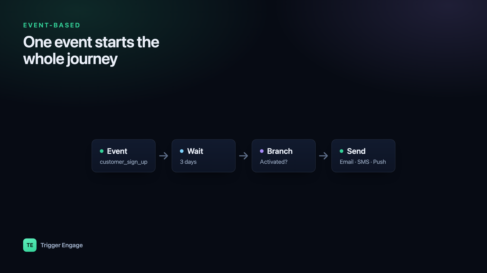

Newsletters blast everyone on a schedule. Event-based emails do the opposite: they react to what a user actually does — a signup, a first purchase, an abandoned checkout step. In Laravel, you can build them two ways, and this guide walks both: a quick DIY version using native events and mailables, then a full journey engine for when one-off emails aren't enough.

What "event-based email" means
An event-based email is triggered by something a user does, not by the calendar. Instead of "send the July newsletter to the whole list on Tuesday," the rule becomes "when a user completes their first booking, send the getting-started email." Because the message maps to a real moment of intent, event-based emails consistently out-convert broadcasts — the person is already thinking about the thing you're emailing about.
Under the hood, every serious lifecycle system leans on two primitives. Identify answers who is this person — their email, name, plan, and any traits you want to segment or personalize on. Track answers what did they do — a named event like customer_sign_up or order_placed, optionally with properties. Once you can identify people and track their actions, everything else is just deciding which action fires which message.
Option A: Laravel events, listeners, and mailables (the DIY way)
Laravel already ships everything you need to send email based on user actions without any package. You dispatch a domain event, a listener picks it up, and the listener queues a Mailable. Start by generating the mail class:
// php artisan make:mail WelcomeEmail --markdown=emails.welcome
namespace App\Mail;
use Illuminate\Bus\Queueable;
use Illuminate\Contracts\Queue\ShouldQueue;
use Illuminate\Mail\Mailable;
use App\Models\User;
class WelcomeEmail extends Mailable implements ShouldQueue
{
use Queueable;
public function __construct(public User $user) {}
public function build()
{
return $this->subject('Welcome to the app')
->markdown('emails.welcome');
}
}Next, fire an event when the user registers and wire a listener that queues the mail. Because the Mailable implements ShouldQueue, the actual send happens on your queue worker, not in the web request:
// App\Listeners\SendWelcomeEmail
use Illuminate\Support\Facades\Mail;
use App\Mail\WelcomeEmail;
use App\Events\UserRegistered;
class SendWelcomeEmail
{
public function handle(UserRegistered $event)
{
Mail::to($event->user->email)
->send(new WelcomeEmail($event->user));
}
}
// In your controller, after creating the user:
UserRegistered::dispatch($user);This works, and for a single transactional email it's the right amount of code. But the DIY route hits a wall fast. Be honest with yourself about the limitations before you build your tenth listener:
- No built-in delays or waits. "Wait 3 days, then email if they haven't done X" means scheduled jobs, timestamp bookkeeping, and cancellation logic you write and maintain by hand.
- No multi-step sequences. Each email is its own listener; there's no concept of a journey a user moves through.
- No SMS or push from the same profile. Adding channels means duplicating recipient logic per provider.
- No segmentation or A/B testing. You can't easily branch on traits or split traffic between variants.
- You hand-roll suppression and analytics. Unsubscribes, bounce handling, open/click tracking, and "did this send actually go out" are all on you.
Native events and mailables are excellent for one-off automated emails — a receipt, a password reset, a single welcome note. They become painful the moment you want a real lifecycle sequence.
Option B: fire events into a messaging engine
Instead of hand-coding each sequence, you can send events to an automation engine and build the journeys visually. The mental model flips: your Laravel app stops owning the "when to send what" logic entirely. It just calls identify and track. The engine owns the delays, branches, sends, and multi-channel delivery — and you edit those without shipping code.
With Trigger Engage you can pull in just the SDK, or embed the whole engine inside your own app so no customer data leaves your infrastructure:
# Just the client SDK
composer require trigger-engage/laravel
# Or embed the entire engine in your Laravel app
composer require trigger-engage/serverThen the two calls that replace all your listener plumbing. Identify the person once (typically on signup or login), and track events wherever meaningful actions happen:
use TriggerEngage\Facades\TriggerEngage;
// Who is this person — email, name, any traits you segment on
TriggerEngage::identify('user-'.$user->id, [
'email' => $user->email,
'first_name' => $user->first_name,
]);
// What did they do — a named event, optional properties
TriggerEngage::event('customer_sign_up', [
'plan' => 'free',
], person: 'user-'.$user->id);Three properties make this safe to sprinkle throughout your app. It's fail-open — if the engine is unreachable, the call never throws into your request path, so a messaging outage can't break signup. It's queued, so it adds no latency to the response. And it's idempotent, so a retried job won't double-fire the same journey. You can read the full method surface in the Laravel SDK, and the install guide covers both the SDK-only and embedded setups.
A worked example: a 3-step onboarding flow
Here's the flow that's genuinely annoying to build with listeners and trivial with an engine. New user signs up. You want to: welcome them immediately, wait 3 days, then — only if they still haven't completed a key action — send a nudge. And the moment they do complete it, the flow stops so they never get the nudge.
In the engine you assemble this as nodes rather than code:
- Trigger: the
customer_sign_upevent starts the journey. - Send: the welcome email goes out right away.
- Delay: wait 3 days.
- Wait-for-event / branch: has the user fired, say,
first_booking_completedin that window? - Send: if not, deliver the nudge.
- Goal:
first_booking_completedis set as the journey's goal, so completing it exits the flow immediately — no nudge, no double-messaging.
Your Laravel app's only job is to keep firing accurate events (customer_sign_up, first_booking_completed). Everything about timing and conditions lives in the journey, where a non-engineer can adjust the delay or reword the nudge without a deploy. For deeper patterns — onboarding, trial conversion, win-back — see our guide to lifecycle email sequences.
Adding SMS and push
Because the engine already knows who the person is, adding channels is not more integration work — it's another send node on the same journey. The same customer_sign_up event that triggers the welcome email can, three days later, trigger an SMS nudge instead of (or alongside) the email, all against one profile. Email goes out over SMTP, SES, Mailgun, or Postmark; SMS via Termii; push via OneSignal. One identify, one event, any channel.
Testing without sending real email
You never want a test suite firing live email. For the DIY route, Laravel's Mail::fake() lets you assert a mailable was queued without sending it:
Mail::fake();
// ... trigger the action under test ...
Mail::assertQueued(WelcomeEmail::class);The SDK ships an equivalent so your event tracking never hits the network in tests. Swap in the fake, run your code, and assert the event was recorded:
TriggerEngage::fake();
// ... register a user ...
TriggerEngage::assertEventSent('customer_sign_up');This keeps your journey wiring under test without a running engine or a real mail provider, which matters once you're branching and splitting traffic for A/B testing your emails.
Self-host or SaaS
Because Trigger Engage is open source, you're not locked into a hosted vendor. You can run it as a standalone self-hosted service, or embed it directly in your Laravel app so customer data never leaves your infrastructure. Either way there's no per-profile fee — the thing that makes traditional lifecycle platforms expensive precisely as you succeed and your user base grows. You own the data, the templates, and the journeys.
Frequently asked questions
How do I send an email when a user signs up in Laravel?
php artisan make:mail, dispatch a domain event (or use Laravel's Registered event) after you create the user, and have a listener call Mail::to(...)->send(...). Make the Mailable implement ShouldQueue so the send happens on a queue worker and doesn't slow the signup request.What's the difference between transactional and event-based emails?
Do I need a third-party service for event-based emails?
How do I test event-based emails in Laravel?
Mail::fake() with Mail::assertQueued() to verify a mailable would be sent without actually sending it. If you're firing events into an engine, use the SDK's TriggerEngage::fake() with assertEventSent() so your tests assert the right events were tracked without touching the network or a real mail provider.